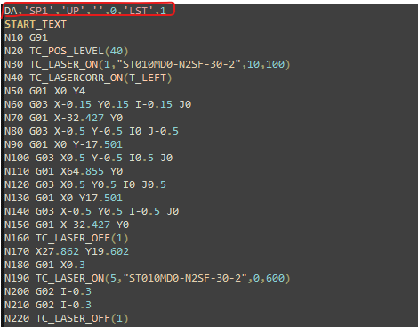

LST Program Structure
Identification of Main Program in LST
From the LST file the main program is identified with the set of text that starts with ‘HP’ and ends with M30.

Identification of Sub programs in LST
In the LST file, the sub programs are called from the main program with the syntax “SP@”, where @ is the number of sub program, eg: SP1 will call the respective sub program!

List of Cycle Programs
The cycle programs are pre-defined in the LST to perform a specific function in the program and the list is as follows:
| S.No | Name | Description | DIN support |
|---|---|---|---|
1. |
TC_POS_LEVEL(40) |
Updates the Head position with the given value |
Yes |
2. |
TC_SHEET_TECH(“SHT-1”) |
— |
No |
3. |
TC_SHEET_LOAD(“SHT-1”) |
— |
No |
4. |
TC_MICROJOINT(“MIJO-1”) |
Adds the soft micro joint with given parameters |
Yes |
5. |
TC_LASER_ON(params) |
Switches the LASER beam ON with given technology table |
Yes |
6. |
TC_LASERCORR_ON(T_LEFT) |
Activates the tool radius compensation G41/G42 with given value |
Yes |
7. |
TC_LASER_OFF(param) |
Switched the LASER beam OFF & moves the head up with given parameter |
Yes |
8. |
TC_PART_END(param) |
— |
No |
9. |
TC_LEAD_IN(params) |
Adds the Lead In after soft micro joint with given parameter |
No |
10. |
TC_WRITE(params) |
Marks the text with given parameters |
Yes |
11. |
TC_SYNC_POS_SUPPRESS_ON |
Deactivates Frog jump |
Yes |
12. |
TC_SYNC_POS_SUPPRESS_OFF |
Activates Frog jump |
Yes |
13. |
TC_SHEET_THICK |
Position the head with the previous height before the remnant cut |
Yes |
14. |
TC_Wait(param) |
Laser Cycle for Corner cooling to prevent burning in. The laser beam is switched OFF |
Yes |
| The list will be updated with new entries, implementation in DIN , etc., |
List of Special commands
| S.No | Name | Description | DIN support |
|---|---|---|---|
1. |
ROT RPL=90 |
Rotates the contour by 90 deg |
Yes |
2. |
ROT |
Cancel the contour rotation |
Yes |
3. |
FLIN |
Feed rate varies linearly |
No |
4. |
FNORM |
Feed rate normal |
Yes |
5. |
IC |
Incremental command |
Yes |